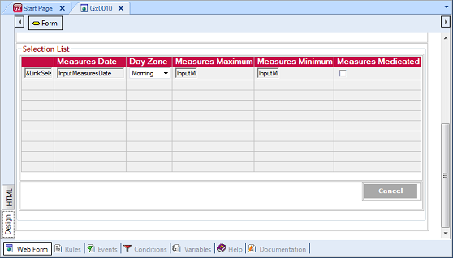
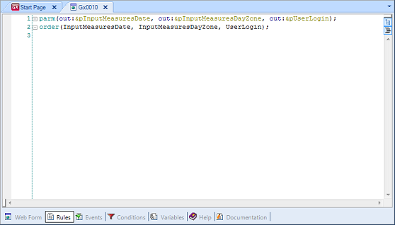
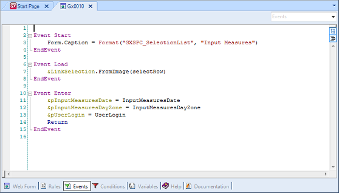
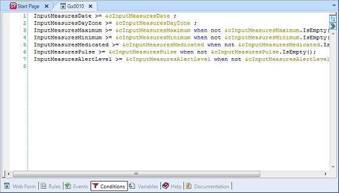

These are objects that manage user-driven and interactive activities quite easily in web interface applications. They allow you to define interactive queries to the database. They are very flexible objects, suitable for many purposes, with event-oriented programming. A Web Panel object has several sections that can be defined:
Like most objects, it also has a section for defining variables (as usual, local to the object), the object's Help and Documentation as well as a Properties editor, that allows you to set up general aspects of the object: some that apply to all objects, such as its name, others that are specific to Web Panel objects, such as whether an 'Automatic Refresh' is performed when variables in conditions change, etc.    
|